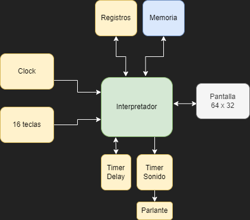

Intro a emuladores: Desarrollo de un emulador de CHIP-8
Gonzalo Avila · gzalo.comAntes de empezar
¡Gracias por venir! Vamos a estar ~5 horas programando.
Si algo no funciona bien o no se entiende, no duden en preguntar.
Presentación en: emuladores.gzalo.com/diapositivas
Creative Commons Attribution-NonCommercial 4.0 International LicenseManipulación de bits
Para varias partes necesitaremos trabajar a nivel de bits
Binario
Cada valor de una variable está compuesto de bits:
Operaciones básicas
Aplican bit a bit (bitwise), no confundir con operaciones lógicas:
- A&B (AND): 1 si ambos son 1
- A|B (OR): 1 si alguno es 1
- A^B (XOR): 1 si alguno es 1 pero no los dos
- ~A (NOT): valor opuesto bit a bit
- A<<B (Left shift): mueve todo a la izquierda B lugares
- A>>B (Right shift): mueve todo a la derecha B lugares
Encender un bit
Máscara con 0s en todos los lugares excepto uno (o más), usar OR:

a = a | 0x08
a = a | (1<<3)
Apagar un bit
Máscara con 1s en todos los lugares excepto uno (o más), usar AND:
a = a & 0xDF
a = a & ~(1<<5)
Cambiar el estado un bit (togglear)
Máscara con 0s en todos los lugares excepto uno (o más), usar XOR:

a = a ^ 0x10
a = a ^ (1<<4)
Revisar el estado un bit
Máscara que tenga 1 en un solo lugar, usar AND:
Si el resultado es distinto de 0, el bit estaba setteado

if ((a & 0x40) != 0) ...
if ((a & (1<<6)) != 0) ...
Arquitectura CHIP-8
8 bits, Von Neumann
Creada por Joseph Weisbecker a fines de los 70
No fue originalmente creada en hardware, empezó como un interprete para la computadora COSMAC VIP
Memoria
- 4096 lugares, cada uno un byte (8 bits). Direcciones 0x0000-0x0FFF en hexadecimal
- Los primeros 512 bytes tenían el bootloader, la mayoría de los programas no lo usa
- Los 256 bytes más altos se reservaban para variables internas, una tipografía de 3x5 entre otras
- No vamos a usar esos bytes así que podemos empezar declarando un array de 4096 posiciones para la memoria:
uint8_t memory[0x1000];
Registros
- Son lugares donde se guardan datos internamente, se usan por distintas operaciones
- V0 a VF: 16 registros de 8 bits
- VF se usa como Carry flag: 1 si hubo carry o no borrow y en algunas operaciones gráficas
- I Address register 12 bits, usado en varias operaciones relacionadas con la memoria
- PC Program Counter, se leen las instrucciones desde allí y se va incrementando. Empieza en 0x200 (donde se cargan los programas)
uint8_t v[16];
uint16_t pc = 0x200;
uint16_t address = 0x0000;Stack
- En el mismo se guardan las direcciones de retorno (próximo valor de PC) al llamar a una subrutina.
- Al menos 24 niveles de stack. Podemos usar el mismo espacio de memoria que usaba el intérprete original
- Debemos usar un stack pointer, que puede ser de 8 bits. El mismo contiene el índice donde se almacenarán los próximos elementos a pushear
uint16_t stack[24];
uint8_t stackPointer = 0;Timers
- Son contadores de 8 bits que se decrementan cada 1/60 de segundo. Cuando llegan a 0 quedan ahí, no se reinician solos:
- Delay: se puede leer y escribir el valor
- Sonido: solo escritura, cuando no vale cero debería sonar un tono
uint8_t delayTimer = 0;
uint8_t soundTimer = 0;Gráficos
- 64x32 monocromáticos
- No tienen mucho misterio, solo un comportamiento de readback al dibujar sprites. Podemos usar un framebuffer o escribir directo en pantalla (si tenemos un mecanismo para leer pixeles)
uint8_t screen[64*32];Teclado
- Tiene 16 teclas, de 0 a F. Por lo general el 8 4 6 2 son usados como flechas.
- Se pueden mappear al teclado numérico:
1 2 3 C 4 5 6 D 7 8 9 E A 0 B F
Game loop
cargarRom();
while (!fin) {
manejarEventos();
if(delayTimer > 0) delayTimer--;
if(soundTimer > 0) soundTimer--;
avanzarEmulacion();
dibujarPantalla();
esperar(16 ms);
}avanzarEmulaciondebería correr ~500 veces por segundo. Asumiendo video a 60 fps, podemos correrlo 8 veces por frame y debería ser similar.- En otros emuladores más precisos se cuenta el delay por instrucción (en CHIP-8 no importa)
- Siempre corriendo, pero se podrían agregar estados (running, paused, halted, ...) que ayuden a debuggear
Funcionalmente
No recomendado por ahora pero es posible
Estadot+1 = f(Estadot)
Eventos
- La biblioteca que estén usando debería proveer de una forma de detectar eventos (teclado, cierre de ventana, ...).
- Los de teclado suelen ser detectados una única vez: una cuando se presiona, una cuando se suelta.
- Necesitamos convertirlos en variables booleanas/array/bitset, cómo prefieran:
uint8_t keys[16];Gráficos
- Para dibujar en la pantalla se usan sprites de 8 pixeles de ancho, y entre 1 y 15 de alto.
- Se hace con un XOR del valor actual de la pantalla y el sprite.
- Si algun pixel pasa de estar "prendido" (blanco) a estar "apagado" (negro), se settea VF a 1, si no se settea a 0.
- No hay sincronización con el renderizado de un frame, es normal que parpadeen.
Emulando gráficos
- Tenemos una función tipo
setPixel(x,y,value)ygetPixel(x,y)o si no, acceso a memoria de video. - Suelen ser 24 o 32 bits:
blanco = 0xFFFFFFFFynegro = 0xFF000000. - Como es muy pequeña la pantalla, recomiendo que usen un factor de escala y dibujen cada píxel más de una vez (un cuadrado de NxN)
Fuente 3x5
uint8_t font[80] = {
0x60, 0xa0, 0xa0, 0xa0, 0xc0,
0x40, 0xc0, 0x40, 0x40, 0xe0,
0xc0, 0x20, 0x40, 0x80, 0xe0,
0xc0, 0x20, 0x40, 0x20, 0xc0,
0x20, 0xa0, 0xe0, 0x20, 0x20,
0xe0, 0x80, 0xc0, 0x20, 0xc0,
0x40, 0x80, 0xc0, 0xa0, 0x40,
0xe0, 0x20, 0x60, 0x40, 0x40,
0x40, 0xa0, 0x40, 0xa0, 0x40,
0x40, 0xa0, 0x60, 0x20, 0x40,
0x40, 0xa0, 0xe0, 0xa0, 0xa0,
0xc0, 0xa0, 0xc0, 0xa0, 0xc0,
0x60, 0x80, 0x80, 0x80, 0x60,
0xc0, 0xa0, 0xa0, 0xa0, 0xc0,
0xe0, 0x80, 0xc0, 0x80, 0xe0,
0xe0, 0x80, 0xc0, 0x80, 0x80
};
for(int i=0;i<80;i++) {
memory[i] = font[i];
}Carga de archivos
Para cargar las ROMs, debemos abrir un archivo en modo binario y leer cada byte en la memoria desde la posición 0x200.
Podemos intentar leer el tamaño completo, siempre que no falle si se acaba antes.
FILE *input = fopen("game.ch8", "rb");
fread(&memory[0x200], 0xE00, 1, input);
fclose(input);avanzarEmulacion
Es el core de la emulación, se puede dividir en 3 partes:
- Fetch: lee el "código de operación"/opcode desde la memoria
- Decode: decide qué operación realizar en función del opcode
- Execute: ejecuta dicha operación
Fetch
Cada opcode indica qué instrucción se deberá realizar. En CHIP-8 son todos de 2 bytes, big endian:
uint16_t opcode = (memory[pc]<<8) | memory[pc+1];
pc += 2;Decode
Tenemos instrucciones con distintos operandos de distintos largos, por ejemplo:
- 0x2NNN con NNN es un número de 12 bits
- 0x6XNN con X un número de 4 bits, NN un número de 8 bits
- 0xDXYN con X, Y, N números de 4 bits
uint8_t opcode1 = opcode >> 12;
uint8_t opcode2 = (opcode >> 8) & 0xF;
uint8_t opcode3 = (opcode >> 4) & 0xF;
uint8_t opcode4 = opcode & 0xF;
unsigned short address = opcode & 0xFFF;
unsigned char byte1 = (opcode >> 8) & 0xFF;
unsigned char byte2 = opcode & 0xFF;
Execute
00E0: borra la pantalla00EE: vuelve de una subrutina:pc = pop(); pc = stack[--stackPointer]0NNN: ignorar, eran llamadas a funciones de la COSMAC1NNN: jmp NNN:pc = NNN;2NNN: call NNN:push(pc); pc = NNN;. El push:stack[stackPointer++] = pc;3XNN: Saltea la próxima si VX es igual a NNif(Vx == NN) pc += 2;4XNN: Saltea la próxima si VX no es igual a NNif(Vx != NN) pc += 2;
Execute
5XY0: Saltea la próxima si VX es igual a VY:if(Vx == Vy) pc += 2;6XNN: VX = NN7XNN: VX += NN (el carry no afecta VF)8XY0: VX = VY8XY1: VX = VX | VY8XY2: VX = VX & VY8XY3: VX = VX ^ VY
Execute
8XY4: Vx = Vx + Vy; VF = 1 si hubo carryV[x]+V[y]>0xFF8XY5: Vx = Vx - Vy; VF = 1 si hubo borrowv[0xF] = 1 if(V[x] >= V[y]) else 0;8XY6: Vx = Vx >> 1; Vf es el bit que era el más bajo antes de la operaciónVx & 18XY7: Vx = Vy - Vx; VF = 1 si hubo borrowv[0xF] = 1 if(V[y] >= V[x]) else 0;8XYE: Vx = Vx << 1; Vf es el bit que era el más alto antes de la operaciónVx >> 79XY0: Saltea la próxima si VX no es igual a VYif(Vx != Vy) pc += 2;ANNN: address = NNN
Execute
BNNN: pc = V0 + NNNCXNN: Vx = rand(0,256) & NNEX9E: Saltea la próxima si la tecla Vx está apretadaif(isDown(Vx)) pc += 2EXA1: Saltea la próxima si la tecla Vx no está apretadaif(!isDown(Vx)) pc += 2FX07: Vx = delayTimer;FX0A:if(ningunaTecla) pc -= 2; else Vx = teclaPresionada;
Execute
DXYN: draw(Vx, Vy, N), dibuja un sprite en la posición Vx, Vy, 8 píxeles de ancho y N de alto. Cada fila de 8 pixeles se lee a partir de la posición I.- No cambia el valor de I pero sí el de VF, se settea a 1 si se apaga algún pixel, si no 0
V[0xF] = 0;
for (int y=0;y<N;y++) {
uint8_t actual = memory[address+y];
for (int x=0;x<7;x++) {
if ((actual&(0x80)) != 0 && x+V[X]<64 && y+V[Y]<32) {
if (getPixel(screen,x+V[X],y+V[Y])) {
putPixel(screen,x+V[X],y+V[Y],0);
V[0xF] = 1;
} else {
putPixel(screen,x+V[X],y+V[Y],0xFFFFFF);
}
}
actual <<= 1;
}
}
FX15: delayTimer = Vx;FX18: soundTimer = Vx;FX1E: address = address + Vx (el carry no afecta VF)FX29: address = font[Vx] (dirección donde guardamos la fuente de 4x5)address = Vx * 0x5;FX33:memory[address] = Vx/100; memory[address+1] = (Vx/10)%10; memory[address+2] = Vx%10;convierte a BCD extrayendo cada dígito a un byteFX55:for(i=0;i<=x;i++) memory[i+I] = Vi;FX65:for(i=0;i<=x;i++) Vi = memory[i+I];
Execute
ROMs
Hay muchos juegos y ROMs que ayudan a ver si están funcionando bien los opcodes:
Pasos próximos
- Sonidos, mejorar timings
- Disassembler: sacar loop, solo decodificar e imprimir
- Muchas extensiones: HI-RES (64x128), SCHIP (128x64), MegaChip (colores)
- GameBoy (Z80)
- NES (6502)
- Arcade: Space Invaders (8080, manejo de interrupciones!), Pac-Man (Z80)
- Micro PIC (35 instrucciones), 8052 (CISC pero varios periféricos)
- Dynarec